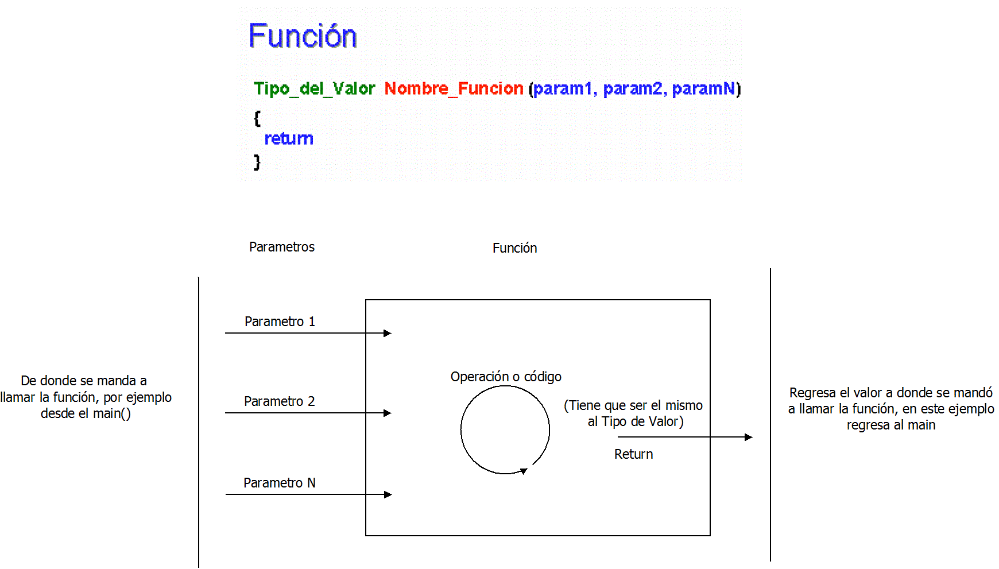

|
|
| Actividad:
Desarrollando
programas en C No. 5. Unidad: Estatutos de repetición. |
|
| Descripción | |
 |
|
| Modalidad | |
 |
|
| Objetivos de la actividad | |
 |
|
| Instrucciones | |
 |
Forma de trabajo:
Utiliza el siguiente
esquema como apoyo para desarrollar tus soluciones:

Programa principal: Crea una bilblioteca con el nombre "misfunciones.h" y coloca en ella todas tus funciones del laboratorio pasado (menos el main) metros_pies, pies_metros, etc... . Importa la biblioteca a un nuevo programa, utilizando el comando #include"misfunciones.h", en este programa crea la función tortuga_contra_turtle(float disttortuga, float distturtle), que recibe 2 parametros: la distancia recorrida por una tortuga en metros y la distancia recorrida por una turtle en pies. Tu función debe determinar quién llegó más lejos si tortuga o turtle e imprimir las distancias recorridas y comparadas. caso prueba tortuga_contra_turtle(disttortuga, distturtle)
Recueda que los valores los debes de pedir desde el main y pasarlos como parámetros a la función tortuga_contra_turtle. Utiliza las funciones que están en la biblioteca misfunciones.h para hacer las conversiones de pies a metros o metros a pies. Crea un mensaje de bienvenida que se despligue al inicio del programa en el que expliques al usuario como funciona el programa y que debe de hacer para usarlo. El mensaje debe de estar en un función vacía que mandes a llamar desde el main. Programa Abierto: Crea
una biblioteca con las funciones que hiciste para el pograma
abierto de funciones (si no lo hiciste crea uno nuevo) e
integra en la biblioteca nueva funcionalidad usando al menos 3
funciones vacias que mandes a llamar más de una vez en el main de otro
programa sube tanto el .h como el .c a Black board. Este programa es tuyo, úsalo para hacer cosas interesante y retadoras no cosas fáciles. |
| Recursos | |
 |
|
| Especificaciones de entrega | |
 |
|
 |
|
| DR© Tecnológico de Monterrey Campus Querétaro| Departamento de Desarrollo Académico| México, 2011 | |